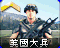
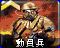
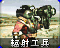
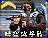
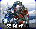
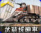
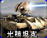
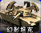
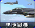

红警 2 / 尤复 · 单位图标素材库
普通图标在前，三星图标在后。来源为本机游戏资源；无独立图标的单位见各版本清单。
红警 2 原版


















全部菜单图标（含建筑、超武及遗留图标）
尤里的复仇
美國大兵E1 · infantry動員兵E2 · infantry磁爆步兵SHK · infantry工程師ENGINEER · infantry火箭飛行兵JUMPJET · infantry海豹部隊GHOST · infantry尤里複製人YURI · infantry瘋狂伊文IVAN · infantry輻射工兵DESO · infantry警犬DOG · infantry超時空軍團兵CLEG · infantry間諜SPY · infantry超時空突擊隊CCOMAND · infantry心靈突擊隊PTROOP · infantry超時空伊文CIVAN · infantry尤里XYURIPR · infantry狙擊手SNIPE · infantry譚雅TANY · infantry防空步兵FLAKT · infantry恐怖份子TERROR · infantry工程師SENGINEER · infantry警犬ADOG · infantry平民VLADIMIR · infantry平民PENTGEN · infantry總統PRES · infantry終極保鏢SSRV · infantry工程師YENGINEER · infantry重裝大兵GGI · infantry尤里新兵INIT · infantry菁英戰鬥兵BORIS · infantry狂獸人BRUTE · infantry病毒狙擊手VIRUS · infantryHeroARND · infantryBodybuilderSTLN · infantry洛馬諾夫總理RMNV · infantry登月火箭員LUNR · infantry奴隸SLAV · infantry警犬YDOG · infantry警犬YADOG · infantry盟軍機動基地車AMCV · vehicle武裝採礦車HARV · vehicle天啟坦克APOC · vehicle犀牛坦克HTNK · vehicle裝甲運兵船SAPC · vehicle灰熊坦克MTNK · vehicle卡車TRUCKA · vehicle航空母艦CARRIER · vehicleV3 火箭發射車V3 · vehicle基洛夫空艇ZEP · vehicle恐怖機器人DRON · vehicle防空履帶車HTK · vehicle驅逐艦DEST · vehicle颱風級攻擊潛艇SUB · vehicle神盾巡洋艦AEGIS · vehicle兩棲運輸艇LCRF · vehicle無畏級戰艦DRED · vehicle夜鷹直昇機SHAD · vehicle巨型烏賊SQD · vehicle海豚DLPH · vehicle蘇聯機動基地車SMCV · vehicle坦克殺手TNKD · vehicle磁能坦克TTNK · vehicle雌鹿運輸直昇機HIND · vehicle狂風坦克LTNK · vehicle超時空採礦車CMIN · vehicle光稜坦克SREF · vehicle位置標定器XCOMET · vehicle海蠍HYD · vehicle幻影坦克MGTK · vehicle多功能步兵戰鬥車FV · vehicle維拉迪摩指揮艦VLAD · vehicle自爆卡車DTRUCK · vehicle裝甲運兵船YHVR · vehicle尤里機動基地車PCV · vehicle奴隸礦場SMIN · vehicle蓋特機砲坦克YTNK · vehicle戰鬥要塞BFRT · vehicle磁電坦克TELE · vehicle神經突擊車CAOS · vehicle雷鳴攻擊潛艦BSUB · vehicle武裝直升機SCHP · vehicle精神控制車MIND · vehicle雷射幽浮DISK · vehicleZZZ Not UsedUTNK · vehicle遙控坦克ROBO · vehicle武裝直升機SCHD · vehicle入侵者戰機ORCA · aircraft黃蜂HORNET · aircraft鶚式運輸機ASW · aircraft運輸機PDPLANE · aircraft黑鷹戰機BEAG · aircraft運輸機CARGOPLANE · aircraft米格戰機BPLN · aircraft偵察機SPYP · aircraft全部菜单图标（含建筑、超武及遗留图标）
 adogicon.shpadoguico.shpaengicon.shpaenguico.shp
adogicon.shpadoguico.shpaengicon.shpaenguico.shp agapgen.shpagisicon.shp
agapgen.shpagisicon.shp ahrvicon.shp
ahrvicon.shp ahrvuico.shp
ahrvuico.shp aparicon.shp
aparicon.shp apchicon.shpapcicon.shp
apchicon.shpapcicon.shp artyicon.shp
artyicon.shp asaticon.shpayaricon.shp
asaticon.shpayaricon.shp batricon.shp
batricon.shp beagicon.shpbfrticon.shp
beagicon.shpbfrticon.shp bfrtuico.shpbggyicon.shpbnkricon.shpbolticon.shp
bfrtuico.shpbggyicon.shpbnkricon.shpbolticon.shp bplnicon.shpbrckicon.shpbrisicon.shp
bplnicon.shpbrckicon.shpbrisicon.shp brisuico.shp
brisuico.shp brrkicon.shp
brrkicon.shp bruticon.shp
bruticon.shp brutuico.shp
brutuico.shp bsubicon.shpbsubuico.shp
bsubicon.shpbsubuico.shp caosicon.shpcaosuico.shp
caosicon.shpcaosuico.shp carricon.shp
carricon.shp ccomicon.shp
ccomicon.shp ccomuico.shpchemicon.shp
ccomuico.shpchemicon.shp chroicon.shpchrpicon.shpcitwicon.shpclckicon.shp
chroicon.shpchrpicon.shpcitwicon.shpclckicon.shp clegicon.shpcleguico.shpclonicon.shp
clegicon.shpcleguico.shpclonicon.shp cnsticon.shpcrryicon.shp
cnsticon.shpcrryicon.shp csphicon.shpdarken.shp
csphicon.shpdarken.shp desoicon.shpdesouico.shpdesticon.shpdetnicon.shp
desoicon.shpdesouico.shpdesticon.shpdetnicon.shp diskicon.shp
diskicon.shp diskuico.shp
diskuico.shp dlphicon.shpdlphuico.shp
dlphicon.shpdlphuico.shp dogicon.shp
dogicon.shp doguico.shp
doguico.shp dredicon.shpdronicon.shpe1icon.shp
dredicon.shpdronicon.shpe1icon.shp e1uico.shpe2icon.shp
e1uico.shpe2icon.shp e2uico.shpe4icon.shpempicon.shp
e2uico.shpe4icon.shpempicon.shp engnicon.shpfacticon.shp
engnicon.shpfacticon.shp falcicon.shpfixicon.shp
falcicon.shpfixicon.shp flakicon.shpflkticon.shpflktuico.shpforcicon.shpforticon.shpfsdicon.shp
flakicon.shpflkticon.shpflktuico.shpforcicon.shpforticon.shpfsdicon.shp fspicon.shp
fspicon.shp fstdicon.shp
fstdicon.shp fvicon.shp
fvicon.shp fvuico.shpgapicon.shp
fvuico.shpgapicon.shp gat2icon.shpgateicon.shpgbayicon.shp
gat2icon.shpgateicon.shpgbayicon.shp gcanicon.shpgdgiicon.shp
gcanicon.shpgdgiicon.shp gdgiuico.shpggunicon.shp
gdgiuico.shpggunicon.shp giicon.shp
giicon.shp giuico.shp
giuico.shp gorep.shpgrndicon.shpgtncicon.shp
gorep.shpgrndicon.shpgtncicon.shp gtnkicon.shp
gtnkicon.shp gtnkuico.shpgwepicon.shp
gtnkuico.shpgwepicon.shp handicon.shp
handicon.shp harvicon.shp
harvicon.shp harvuico.shp
harvuico.shp heliicon.shp
heliicon.shp hindicon.shphmecicon.shp
hindicon.shphmecicon.shp hovricon.shp
hovricon.shp htkicon.shp
htkicon.shp htkuico.shp
htkuico.shp htnkicon.shp
htnkicon.shp htnkuico.shpindpicon.shp
htnkuico.shpindpicon.shp initicon.shp
initicon.shp inituico.shp
inituico.shp ioncicon.shpircricon.shp
ioncicon.shpircricon.shp ironicon.shpivanicon.shp
ironicon.shpivanicon.shp ivanuico.shp
ivanuico.shp ivncicon.shp
ivncicon.shp ivncuico.shpjjeticon.shp
ivncuico.shpjjeticon.shp jjetuico.shp
jjetuico.shp landicon.shp
landicon.shp lasricon.shp
lasricon.shp liteicon.shplpsticon.shpltnkicon.shp
liteicon.shplpsticon.shpltnkicon.shp ltnkuico.shp
ltnkuico.shp lunricon.shp
lunricon.shp lunruico.shp
lunruico.shp mcvicon.shp
mcvicon.shp mcvuico.shp
mcvuico.shp metricon.shp
metricon.shp mindicon.shpminduico.shpmltiicon.shp
mindicon.shpminduico.shpmltiicon.shp mmchicon.shp
mmchicon.shp msslicon.shp
msslicon.shp mtnkicon.shp
mtnkicon.shp mtnkuico.shpmutcicon.shpmuteicon.shpnga2icon.shp
mtnkuico.shpmutcicon.shpmuteicon.shpnga2icon.shp ngaticon.shp
ngaticon.shp nhpdicon.shp
nhpdicon.shp npsiicon.shp
npsiicon.shp npwricon.shpnradicon.shpnrcticon.shpnreficon.shp
npwricon.shpnradicon.shpnrcticon.shpnreficon.shp ntchicon.shpnukeicon.shpnwalicon.shp
ntchicon.shpnukeicon.shpnwalicon.shp nwepicon.shpobliicon.shpobmbicon.shporcaicon.shpotrnicon.shp
nwepicon.shpobliicon.shpobmbicon.shporcaicon.shpotrnicon.shp paraicon.shppdomicon.shp
paraicon.shppdomicon.shp pillicon.shpplticon.shpplugicon.shp
pillicon.shpplticon.shpplugicon.shp podsicon.shp
podsicon.shp powricon.shp
powricon.shp prisicon.shpproicon.shp
prisicon.shpproicon.shp psicicon.shp
psicicon.shp psicuico.shppsisicon.shppsiticon.shppsituico.shppsyricon.shppsyticon.shppupticon.shp
psicuico.shppsisicon.shppsiticon.shppsituico.shppsyricon.shppsyticon.shppupticon.shp rad1icon.shp
rad1icon.shp rad2icon.shprad3icon.shpradricon.shprbccicon.shprboticon.shp
rad2icon.shprad3icon.shpradricon.shprbccicon.shprboticon.shp reficon.shp
reficon.shp rfixicon.shp
rfixicon.shp roboicon.shp
roboicon.shp robouico.shp
robouico.shp rtnkicon.shprtnkuico.shp
rtnkicon.shprtnkuico.shp samicon.shp
samicon.shp sapcicon.shp
sapcicon.shp sapicon.shpsbagicon.shp
sapicon.shpsbagicon.shp schpicon.shp
schpicon.shp schpuico.shp
schpuico.shp sealicon.shpsealuico.shpseekicon.shp
sealicon.shpsealuico.shpseekicon.shp shadicon.shp
shadicon.shp shaduico.shp
shaduico.shp shkicon.shp
shkicon.shp shkuico.shp
shkuico.shp smchicon.shp
smchicon.shp smcvicon.shpsmcvuico.shpsminicon.shpsminuico.shp
smcvicon.shpsmcvuico.shpsminicon.shpsminuico.shp snipicon.shp
snipicon.shp snipuico.shp
snipuico.shp soniicon.shp
soniicon.shp spoticon.shp
spoticon.shp spyicon.shp
spyicon.shp spypicon.shp
spypicon.shp spyuico.shp
spyuico.shp sqdicon.shp
sqdicon.shp sreficon.shp
sreficon.shp srefuico.shp
srefuico.shp stnkicon.shp
stnkicon.shp subicon.shp
subicon.shp subticon.shp
subticon.shp tanyicon.shptanyuico.shptbnkicon.shptechicon.shpteleicon.shp
tanyicon.shptanyuico.shptbnkicon.shptechicon.shpteleicon.shp teleuico.shp
teleuico.shp tempicon.shp
tempicon.shp teslaicon.shptickicon.shptnkdicon.shp
teslaicon.shptickicon.shptnkdicon.shp tnkduico.shptowricon.shp
tnkduico.shptowricon.shp trkaicon.shp
trkaicon.shp trsticon.shp
trsticon.shp trstuico.shp
trstuico.shp tslaicon.shpttnkicon.shp
tslaicon.shpttnkicon.shp ttnkuico.shp
ttnkuico.shp turbicon.shptwr1icon.shptwr2icon.shp
turbicon.shptwr1icon.shptwr2icon.shp twr3icon.shp
twr3icon.shp v3icon.shp
v3icon.shp v3uico.shp
v3uico.shp vrusicon.shpvrusuico.shpwallicon.shp
vrusicon.shpvrusuico.shpwallicon.shp weapicon.shpweaticon.shp
weapicon.shpweaticon.shp weedicon.shpwethicon.shp
weedicon.shpwethicon.shp xxicon.shpyardicon.shp
xxicon.shpyardicon.shp yclnicon.shpyclnuico.shpyconicon.shpyengicon.shpyenguico.shp
yclnicon.shpyclnuico.shpyconicon.shpyengicon.shpyenguico.shp yhvricon.shpyhvruico.shp
yhvricon.shpyhvruico.shp ypcvicon.shpypcvuico.shpypwricon.shpytchicon.shp
ypcvicon.shpypcvuico.shpypwricon.shpytchicon.shp ytnkicon.shpytnkuico.shpyuriicon.shp
ytnkicon.shpytnkuico.shpyuriicon.shp yuriuico.shpyurpicon.shpyurpuico.shpywepicon.shpyypricon.shpyypruico.shpyyrdicon.shp
yuriuico.shpyurpicon.shpyurpuico.shpywepicon.shpyypricon.shpyypruico.shpyyrdicon.shp zepicon.shp
zepicon.shp zepuico.shp
zepuico.shp